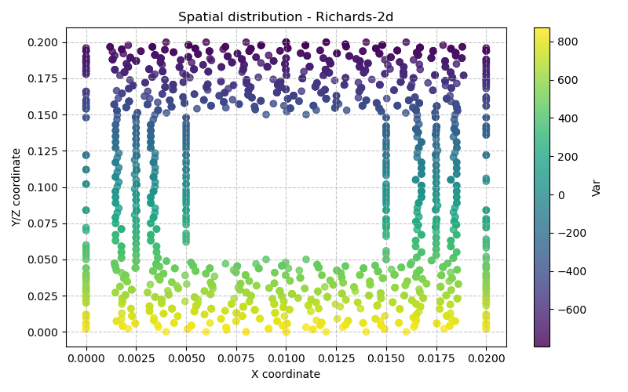

9 Richards-2d — Drainage d’une colonne de billes
Fichier d’entrée : base/Richards-2d/Richards-2d Modèle Bil : Richards (src/Models/ModelFiles/Richards.cpp)
9.1 Contexte physique
Cet exemple simule le drainage par gravité d’une colonne de milieu poreux hétérogène composée de deux zones de perméabilités différentes. Il s’agit d’un problème canonique de l’hydrogéologie non saturée : on observe comment l’eau se draine d’un matériau granulaire (billes) sous l’effet de la gravité lorsque la pression imposée à la base passe subitement de l’état saturé à l’état non saturé.
9.2 Équations mathématiques : l’équation de Richards
Le modèle résout l’équation de Richards (1931), qui gouverne l’écoulement d’un liquide en milieu poreux partiellement saturé sous l’hypothèse que la pression de gaz reste constante (phase gazeuse continue).
9.2.1 Bilan de masse du liquide
\[\frac{\partial m_l}{\partial t} + \nabla \cdot \mathbf{w}_l = 0\]
avec la teneur en masse du liquide :
\[m_l = \rho_l \, \phi \, S_l(p_c)\]
9.2.2 Loi de Darcy généralisée
\[\mathbf{w}_l = -k_l \left( \nabla p_l - \rho_l \, \mathbf{g} \right)\]
avec la perméabilité effective au liquide :
\[k_l = \rho_l \, \frac{k_\text{int}}{\mu_l} \, k_{rl}(p_c)\]
9.2.3 Variables et relations de fermeture
| Symbole | Signification | Valeur |
|---|---|---|
| \(p_l\) | Pression du liquide (inconnue primaire) | — |
| \(p_c = p_g - p_l\) | Pression capillaire | \(p_g = 0\) Pa |
| \(S_l(p_c)\) | Degré de saturation | courbe billes |
| \(k_{rl}(p_c)\) | Perméabilité relative au liquide | courbe billes |
| \(\phi\) | Porosité | 0.38 |
| \(\rho_l\) | Masse volumique du liquide | 1000 kg/m³ |
| \(k_\text{int}\) | Perméabilité intrinsèque | 8.9×10⁻¹² m² (zone ext.) / 8.9×10⁻¹³ m² (zone int.) |
| \(\mu_l\) | Viscosité dynamique | 0.001 Pa·s (eau à 20 °C) |
| \(g\) | Accélération de la pesanteur | −9.81 m/s² |
9.2.4 Schéma temporel
Le flux \(\mathbf{w}_l\) est calculé avec la perméabilité \(k_l\) du pas de temps précédent (lagging de Picard), tandis que la teneur en masse \(m_l\) est implicite en \(p_l\) courant. C’est le schéma IMPES classique pour l’équation de Richards.
9.2.5 Référence bibliographique
Richards, L.A. (1931). Capillary conduction of liquids through porous mediums. Physics, 1(5), 318–333.
9.3 Géométrie et maillage
Le fichier columncomposite.geo définit une colonne rectangulaire 2D composite :
W = 0.02 m (largeur totale)
H = 0.20 m (hauteur totale)
w = W/2 (largeur de l'inclusion)
h = H/2 (hauteur de l'inclusion)La colonne est composée de deux zones matérielles :
| Région GMSH | Surface physique | Rôle | Perméabilité intrinsèque |
|---|---|---|---|
| Surface(100) | Anneau extérieur (domaine – inclusion) | zone plus perméable | 8.9×10⁻¹² m² |
| Surface(101) | Rectangle interne centré | inclusion moins perméable | 8.9×10⁻¹³ m² |
┌──────────────────────┐
│ Zone 100 │ k_int = 8.9e-12 m²
│ ┌────────────┐ │
│ │ Zone 101 │ │ k_int = 8.9e-13 m²
│ │ (inclusion)│ │
│ └────────────┘ │
│ │
└──────────────────────┘
Ligne 11 (base, région 11)9.4 Courbes de rétention et perméabilité relative : fichier billes
Le fichier billes contient une table à 3 colonnes : \(p_c\) [Pa], \(S_l\) [−], \(k_{rl}\) [−].
| Plage de \(p_c\) | Comportement |
|---|---|
| 500 – 577 Pa | \(S_l = 1\), \(k_{rl} = 1\) → milieu totalement saturé |
| 577 – 1000 Pa | \(S_l\) et \(k_{rl}\) décroissent rapidement |
| \(p_c = 1000\) Pa | \(S_l \approx 0.09\), \(k_{rl} \approx 2.6 \times 10^{-8}\) → milieu quasi-sec |
La pression d’entrée d’air (air-entry pressure) se situe vers 575 Pa, et la saturation résiduelle est d’environ 9 %. Ces courbes sont typiques d’un assemblage de billes sphériques calibrées (courbe de type Brooks-Corey ou van Genuchten à paramètres ajustés expérimentalement).
9.5 Explication ligne à ligne du fichier Richards-2d
# Drainage d'une colonne de billesCommentaire descriptif du cas test.
9.5.1 Geometry
2 planEspace 2D plan. L’équation de Richards est résolue dans un plan vertical.
9.5.2 Mesh
columncomposite.mshMaillage GMSH de la colonne composite (généré depuis columncomposite.geo).
9.5.3 Material — bloc 1 (zone externe, Surface 100)
Model = Richards
Gravity = -9.81
Porosity = 0.38
LiquidMassDensity = 1000
IntrinsicPermeability = 8.9e-12
LiquidViscosity = 0.001
ReferenceGasPressure = 0
Curves = billes| Paramètre | Signification |
|---|---|
Model = Richards |
Sélectionne le module Richards.cpp |
Gravity = -9.81 |
Gravité selon l’axe y négatif (vers le bas), en m/s² |
Porosity = 0.38 |
38 % de vides |
LiquidMassDensity = 1000 |
Eau, en kg/m³ |
IntrinsicPermeability = 8.9e-12 |
Perméabilité intrinsèque en m² (zone externe) |
LiquidViscosity = 0.001 |
Viscosité dynamique de l’eau à 20 °C, en Pa·s |
ReferenceGasPressure = 0 |
Pression de gaz de référence \(p_g = 0\) Pa |
Curves = billes |
Fichier de courbes \(S_l(p_c)\) et \(k_{rl}(p_c)\) |
9.5.4 Material — bloc 2 (zone interne, Surface 101)
Identique au bloc 1 sauf :
IntrinsicPermeability = 8.9e-13L’inclusion est 10 fois moins perméable que la zone externe, ce qui ralentit localement le drainage.
9.5.5 Fields
1
Value = 0 Gradient = 0 -9810 0 Point = 0 0.2 0Définit le champ linéaire de pression hydrostatique :
\[p_l(x, y) = 0 + (-9810) \times (y - 0.2) = 9810 \times (0.2 - y) \text{ Pa}\]
ancré au point \((0, 0.2, 0)\) (sommet de la colonne) où \(p_l = 0\) Pa. Ce champ correspond à l’équilibre hydrostatique d’une colonne saturée.
9.5.6 Initialization
2
Region = 100 Unknown = p_l Field = 1 Function = 0
Region = 101 Unknown = p_l Field = 1 Function = 0Initialise \(p_l\) dans les deux régions avec le champ hydrostatique (Field 1, facteur = 1). La colonne démarre entièrement saturée à l’équilibre hydrostatique.
9.5.7 Functions
1
N = 2 F(0) = 1 F(360) = 0Fonction temporelle linéaire valant 1 à \(t = 0\) s et décroissant à 0 à \(t = 360\) s. Elle module l’amplitude de la condition aux limites à la base.
9.5.8 Boundary Conditions
1
Region = 11 Unknown = p_l Field = 1 Function = 1La condition est appliquée sur la base de la colonne (ligne 11, bord inférieur) :
\[p_l^{\text{base}}(t) = \underbrace{9810 \times 0.2}_{\text{Field 1 en } y=0} \times \underbrace{\text{Function}_1(t)}_{\in [0,1]}\]
- À \(t = 0\) : \(p_l = 1962\) Pa (état saturé)
- À \(t = 360\) s : \(p_l = 0\) Pa (pression atmosphérique → aspiration)
Concrètement : on impose progressivement une pression nulle à la base, déclenchant le drainage de la colonne vers le bas.
9.5.9 Loads
0Aucune source volumique externe de masse liquide.
9.5.10 Points
0Aucun point de sortie particulier.
9.5.11 Dates
16
0 200 400 600 800 1000 1200 1400 1600 1800 2000 2200 2400 2600 2800 300016 instants de sortie, de \(t = 0\) à \(t = 3000\) s (50 minutes), tous les 200 s.
9.5.12 Objective Variations
p_l = 1.e3Variation admissible de \(p_l\) entre deux itérations du pas de temps adaptatif : 1000 Pa. Contrôle la taille automatique du pas de temps.
9.5.13 Iterative Process
Iter = 20
Tol = 1.e-6
Recom = 2| Paramètre | Signification |
|---|---|
Iter = 20 |
Maximum 20 itérations Newton-Raphson par pas de temps |
Tol = 1.e-6 |
Tolérance relative de convergence |
Recom = 2 |
En cas de non-convergence : découpage du pas de temps, jusqu’à 2 fois |
9.5.14 Time Steps
Dtini = 1
Dtmax = 1000| Paramètre | Signification |
|---|---|
Dtini = 1 |
Pas de temps initial : 1 s |
Dtmax = 1000 |
Pas de temps maximal : 1000 s |
Le solveur adapte automatiquement le pas de temps entre ces bornes selon la convergence et la variation objective de \(p_l\).
9.6 Sorties calculées
Le modèle calcule et exporte (Richards.cpp, fonction ComputeOutputs) :
| Variable | Nom de sortie | Unité |
|---|---|---|
| Pression liquide | pressure |
Pa |
| Flux massique liquide | flow |
kg/m²/s |
| Degré de saturation | saturation |
— |
9.7 Synthèse du scénario simulé
- \(t = 0\) s : colonne composite entièrement saturée à l’équilibre hydrostatique.
- \(0 < t \leq 360\) s : la pression à la base est progressivement réduite à 0 Pa → le bas de la colonne commence à se drainer.
- \(t > 360\) s : pression nulle maintenue à la base → le front de désaturation remonte dans la colonne sous l’effet de la gravité.
- Effet de l’hétérogénéité : l’inclusion centrale (10× moins perméable) ralentit localement le drainage → on observe un retard de désaturation dans la zone interne, phénomène caractéristique des milieux poreux hétérogènes en conditions non saturées.
9.8 Résultats de la simulation

(Graphes générés automatiquement pour l’exemple Richards-2d)